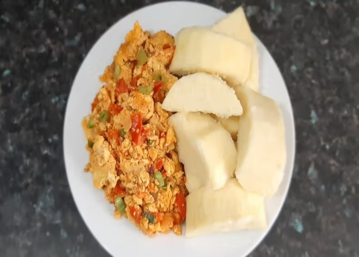

Yam and Egg Stew Recipe

Description
Yam and Egg Stew is a simple yet flavorful Nigerian dish that combines
boiled yam with a savory egg-based tomato stew. The yam, usually cut into
chunks and boiled until tender, serves as the perfect base for the stew,
which is made with sautéed onions, tomatoes, peppers, and eggs, often
spiced with seasonings like thyme, curry, and garlic. This combination
creates a balanced meal that is both filling and delicious, typically
enjoyed as a breakfast or light lunch.
Ingredients
- White yam
- Eggs
- Tomatoes
- Red bell peppers
- Scotch bonnet peppers
- Onions
- Vegetable oil
- Garlic
- Salt
- Seasoning cubes
Steps
-
Peel and cut the yam into chunks, then rinse and boil in salted water
until tender. Drain and set aside.
-
For the egg stew, heat vegetable oil in a pan and sauté chopped onions
until soft.
-
Add blended tomatoes, red bell peppers, and scotch bonnet, and fry until
the oil separates from the tomato mix.
-
Season with thyme, curry powder, garlic, seasoning cubes, and salt.
-
In a separate bowl, beat the eggs and gently pour them into the tomato
sauce.
-
Stir continuously until the eggs scramble and are well incorporated into
the stew.
- Serve the yam with the egg stew as a side dish.